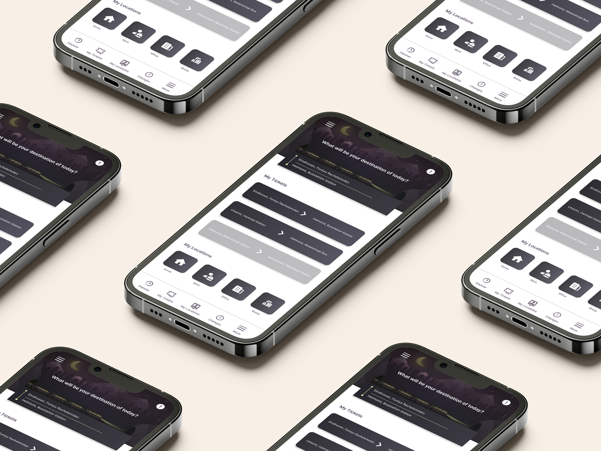

user-centered design challenge
This mobile transport app was part of a user-centered design challenge focused on improving the travel experience. The goal was to design an app that helps users check schedules, buy tickets, and navigate easily—while keeping the interface clean and accessible.
I began by developing paper prototypes based on predefined personas, which included both younger users and older adults. Early feedback revealed that my home and ticket pages were overloaded with text and options, so I simplified the layout by removing unnecessary elements and rewriting content for clarity.
After refining the paper prototype, I moved into mid-fidelity design using Figma. At this stage, I received feedback about spacing issues and usability—particularly around the “thumb zone” for mobile users. To improve readability for older users (a key persona group), I increased text and element sizes and adjusted layouts to reduce white space.
Finally, I created a high-fidelity prototype based on all the iterations and feedback. This project taught me how to combine research, feedback, and accessibility principles to design a cleaner, more usable interface. It also reinforced how important it is to test early and adjust often.